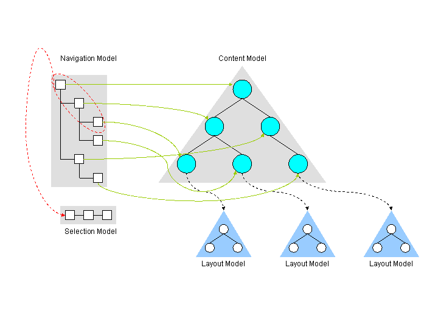

|
||||||||||
| PREV CLASS NEXT CLASS | FRAMES NO FRAMES | |||||||||
| SUMMARY: NESTED | FIELD | CONSTR | METHOD | DETAIL: FIELD | CONSTR | METHOD | |||||||||
public interface SelectionAccessor
Read-only interface to the current selection model.
Background information:
In order to render a page for a user the aggregation needs to find out what
the current page of the user is and which resource reside on this page. All
this information is stored in the topology model of the portal. The topology
model spans several kinds of portal resources. Amongst them is the
containment model of the portal. It consists of a hierarchy of pages, labels
and URLs (the content model); pages have layout models associated with them
that make up the page in form of containers and portlets. The navigation
model is a view on the content model that is presented to the user in order
to navigate inside of the portal. The selection model is a path through the
navigation model and its final node represents the currently selected element
(for example a page to display).
The following picture displays the relations between the different models and shows how the selection is determined: 
| Method Summary | |
|---|---|
java.lang.String |
getFocus()
Returns the ID of the currently focussed item |
java.util.Map<java.lang.String,java.lang.String[]> |
getParameters()
Returns an unmodifiable map containing generic selection parameters. |
ObjectID |
getSelection()
Returns the ObjectID of the navigation node which is
currently selected. |
ObjectID |
getSelectionMapping(ObjectID aNavNode)
Returns the ObjectID of the navigation node which may be
used as a selection fallback for aNavNode. |
ObjectID |
getSelectionMapping(java.lang.String aNavNode)
Returns the ObjectID of the resource which may be used as
selection fallback for aNavNode. |
java.util.Map<ObjectID,ObjectID> |
getSelectionMappings()
Returns an unmodifiable map of selection mappings |
java.net.URI |
getSelectionURI()
Returns the URI of the current selection (if any) or null |
| Methods inherited from interface com.ibm.portal.Disposable |
|---|
dispose |
| Method Detail |
|---|
java.lang.String getFocus()
nulljava.util.Map<java.lang.String,java.lang.String[]> getParameters()
StringString[])-mappings.
null.
java.lang.UnsupportedOperationException - If write operations such as put(Object, Object),
putAll(Map), clear(), or
remove(Object) are invoked.
ObjectID getSelection()
throws InvalidSelectionNodeIdException
ObjectID of the navigation node which is
currently selected. Returns null if no selection information
is available.
ObjectID of the currently selected navigation
node or null.
InvalidSelectionNodeIdException - If at least one of the specified node identifiers is invalid.
ObjectID getSelectionMapping(ObjectID aNavNode)
throws SelectionMappingInvalidException
ObjectID of the navigation node which may be
used as a selection fallback for aNavNode.
aNavNode - The ObjectID of the Navigation Node to get the
mapping. Must not be null.
ObjectID of a resource that may be used as
selection fallback for aNavNodeor null, if no such
mapping is available.
SelectionMappingInvalidException - If the found mapping is available.
ObjectID getSelectionMapping(java.lang.String aNavNode)
throws SelectionMappingInvalidException,
MissingUniqueNameException,
UnknownUniqueNameException
ObjectID of the resource which may be used as
selection fallback for aNavNode.
aNavNode - The unique name of the Navigation Node to get the selection
mapping. Must not be null.
ObjectID of a resource that may be used as
selection fallback for aNavNodeor null, if no such
mapping is available.
SelectionMappingInvalidException - If the found mapping is invalid.
UnknownUniqueNameException - If the unique name could not be mapped to an
ObjectID.
MissingUniqueNameException - If the unique name was null or empty.java.util.Map<ObjectID,ObjectID> getSelectionMappings()
java.net.URI getSelectionURI()
throws InvalidSelectionNodeIdException,
java.net.URISyntaxException
null
null
InvalidSelectionNodeIdException
java.net.URISyntaxException
|
||||||||||
| PREV CLASS NEXT CLASS | FRAMES NO FRAMES | |||||||||
| SUMMARY: NESTED | FIELD | CONSTR | METHOD | DETAIL: FIELD | CONSTR | METHOD | |||||||||